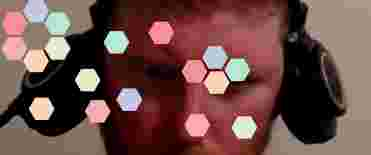

Macros, Matter, & Malleability
What if we embedded live UI and JavaScript logic directly into a Clojure namespace? Sounds wild? Let’s see how.
Clay renders Hiccup views, Scittle executes ClojureScript in the browser, and Reagent enables components as functions. kind/hiccup is how we annotate forms to be rendered as HTML via Clay.
Check out this mini-app for manipulating the Civitas logo.
(kind/hiccup
[:div
'(defonce state (atom {}))
'(declare reset explode)
[:div#app {:style {:width "100%"}}]
['(fn []
[:div
[:em "Click and drag the hexagons"]
[:div
[:button {:on-click #'reset} "reset"]
[:button {:style {:color "red"} :on-click #'explode} "explode"]]])]])Fun right?
Notice that Clay accepts normal hiccup, but further treats forms as code, and function forms as components. We’ll get to the implementations of reset, explode, and the view setup later. But first I want to introduce you to the killer feature for this kind of code; Macros! Not just any macro, but the ultimate macro, sneeze.
(defmacro sneeze
"Generates Hiccup with a quasiquote-like templating syntax,
enabling content insertion using unquote (~) and unquote-splicing (~@)."
[& forms]
`(kind/hiccup ~(backtick/quote-fn identity forms)))This macro sneeze behaves just like quote but respects unquote and unquote-splicing. It also suggests that Clay treat the result as Hiccup, which further means that forms will be treated as Scittle. So it’s a convenient way to write hiccup that contains code, without quoting, and being able to mix in Clojure values with ~ and ~@.
(sneeze
(defn my-component []
[:strong ~(str "Wow, so random " (rand))])
[:div [#'my-component]])This is weird right, why do we need ~? Well, when we define my-component we are writing symbolic code. This is going to be interpreted in the browser, not in Clojure. We can conveniently insert calculations made in Clojure into our UI code. It’s like Scittle just inherited macros! That’s exciting… in a way JavaScript has inherited macros.
Speaking of JavaScript, we need to bring in the MatterJS. MatterJS handles the physics simulation and rendering for our mini-app.
(kind/hiccup
[:script {:src "https://cdnjs.cloudflare.com/ajax/libs/matter-js/0.20.0/matter.min.js"}])O.K. so here’s the code for the hexagons, notice toward the end the use of ~ to reuse Clojure code inside our Scittle code.
(sneeze
;; Set up a MatterJS simulation to render to the `app` div.
(def app (js/document.getElementById "app"))
(def client-width (.-clientWidth app))
(def engine (js/Matter.Engine.create (clj->js {:gravity {:y 0}})))
(def world-width 600)
(def w2 (/ world-width 2.0))
(def render (js/Matter.Render.create (clj->js {:element app
:engine engine
:options {:wireframes false
:background "rgba(0,0,128,0.05)"
:hasBounds true
:width client-width
:height client-width}})))
;; Bounds create a fixed coordinate system, similar to a view-box in SVG.
(set! (.. render -bounds -min -x) 0)
(set! (.. render -bounds -min -y) 0)
(set! (.. render -bounds -max -x) world-width)
(set! (.. render -bounds -max -y) world-width)
(def mouse (js/Matter.Mouse.create (.-canvas render)))
(let [scale (/ world-width client-width)]
(js/Matter.Mouse.setScale mouse (clj->js {:x scale
:y scale})))
(def mouse-constraint (js/Matter.MouseConstraint.create engine (clj->js {:mouse mouse})))
(js/Matter.World.add (.-world engine) mouse-constraint)
(js/Matter.Render.run render)
(def runner (js/Matter.Runner.create))
(js/Matter.Runner.run runner engine)
;; Handle when the browser window dimensions change
(js/window.addEventListener
"resize"
(fn []
(let [w (.-clientWidth app)]
(-> render .-options .-width (set! w))
(-> render .-options .-height (set! w))
(-> render .-canvas .-width (set! w))
(-> render .-canvas .-height (set! w))
(let [scale (/ world-width w)]
(js/Matter.Mouse.setScale mouse (clj->js {:x scale
:y scale})))
(js/Matter.Render.setPixelRatio render js/window.devicePixelRatio))))
;; Add some walls to keep everything inside the view
(defn create-boundaries [width height thickness]
(let [options (clj->js {:isStatic true
:restitution 0.9
:friction 0.1})
x-mid (/ width 2.0)
y-mid (/ height 2.0)
t2 (/ thickness 2.0)]
(for [[x y rw rh] [[(- 0 t2) y-mid thickness height]
[(+ width t2) y-mid thickness height]
[x-mid (- 0 t2) width thickness]
[x-mid (+ height t2) width thickness]]]
(js/Matter.Bodies.rectangle x y rw rh options))))
(js/Matter.World.add (.-world engine)
(clj->js (create-boundaries world-width world-width 500)))
;; The Civitas logo consists of hexagons
(defn make-hexagon [x y radius color]
(js/Matter.Bodies.polygon x y 6 radius
(clj->js {:restitution 0.9
:friction 0.1
:render {:fillStyle color}})))
;; Notice that we can make use of the colors from a different, Clojure namespace
(let [hexagons (for [[x y c] ~(mapv conj (geometry/hex 100) db/get-colors)]
(make-hexagon (+ w2 x) (+ w2 y) 50 c))]
(js/Matter.World.add (.-world engine) (clj->js hexagons))
(swap! state assoc :hexagons hexagons))
;; These functions are attached to the on-click of the buttons
(defn reset []
(doseq [[hex [x y]] (map vector (:hexagons @state) ~(vec (geometry/hex 100)))]
(js/Matter.Body.setAngle hex 0)
(js/Matter.Body.setPosition hex (clj->js {:x (+ w2 x), :y (+ w2 y)}))))
(defn explode []
(doseq [hex (:hexagons @state)]
(js/Matter.Body.setVelocity hex (clj->js {:x (- (rand 50) 25),
:y (- (rand 50) 25)})))))I’ll be the first to admit that this is a zany way to write code. But it’s a lot of fun, powerful, concise, and best of all is there is no setup. Everything is here in this one Clojure namespace. No build steps. I send my namespace to Clay and get a HTML page with Scittle baked in. It blends macros, UI, and JavaScript into a single file. For learning, tinkering, and demos, it’s a joy.

source: src/games/macros_matter.clj